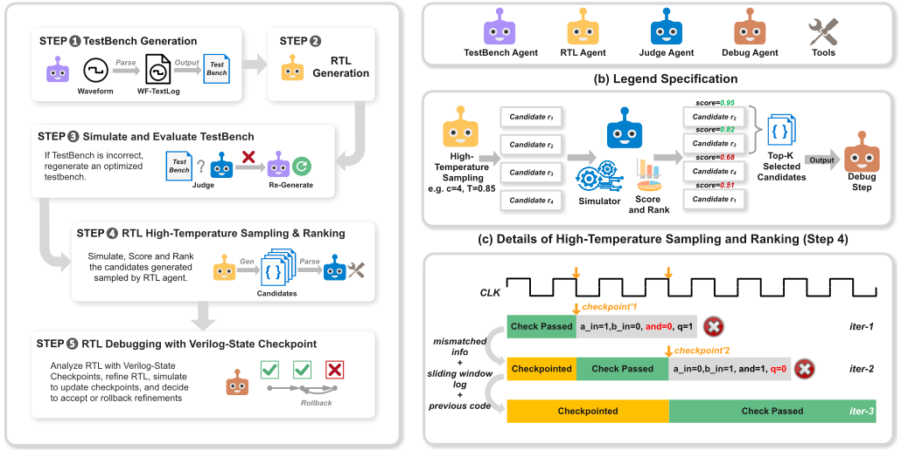
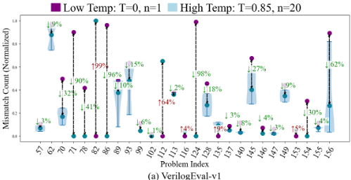
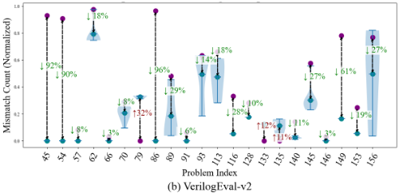
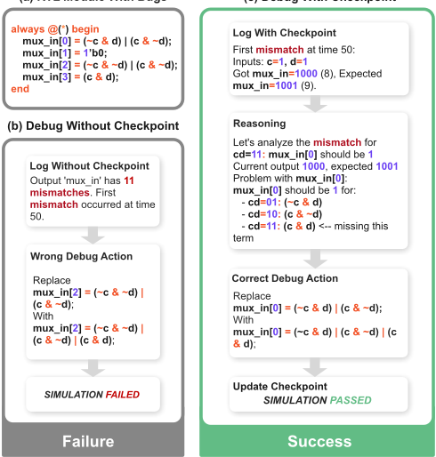
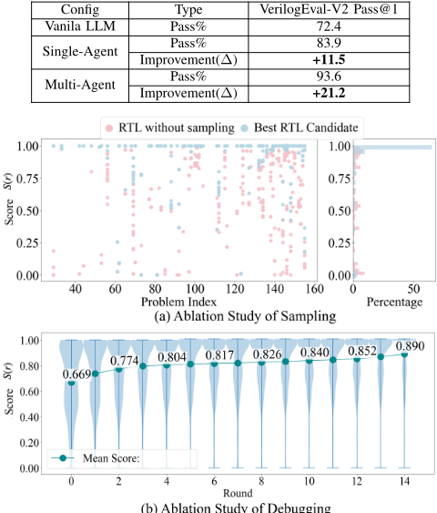

MAGE：面向自动化 RTL 代码生成的多智能体引擎
论文针对现有单 LLM/单智能体方法在自然语言生成 Verilog RTL 时语法与功能正确率不足的问题，提出首个开源多智能体系统 MAGE。系统模仿人类 RTL 团队分工，设置 testbench 生成、RTL 生成、judge 与 debug 四类专职智能体，并引入两项关键技术：高温候选采样与基于 mismatch 计数的打分排序机制，以及 Verilog 状态检查点机制——在每个时钟沿比对 DUT 输出与期望值，以文本波形形式向 LLM 提供精确定位反馈。基于 Claude 3.5 Sonnet 与 Icarus Verilog，MAGE 在 VerilogEval-Human v2 上取得 95.7% Pass@1，较 Claude-3.5-sonnet 相对提升 23.3%，在 VerilogEval-v1-Human 上达 94.8%。消融实验表明多智能体分工（93.6%）显著优于单智能体（83.9%）与单次生成（72.4%），多轮调试可将候选平均得分从 0.669 提升至 0.890。
现有基于单 LLM 或单智能体的 RTL 代码生成方法需在同一对话中处理可综合 RTL 与不可综合 testbench 的生成，并在多编程语言、多知识域与多子任务间频繁上下文切换，导致正确率低（如 Claude-3.5-sonnet 单智能体在简单设计任务上功能通过率仅 75.0%）；且传统反馈仅基于最终输出的 pass rate，缺乏时序、信号交互、变量值与 mismatch 定位等调试所需信息，而闭源工具（如 AST 分析、图形化波形）又限制了可扩展性与 LLM 可直接适配性。
MAGE 构建由 testbench 生成、RTL 生成、judge、debug 四类专职智能体组成的递归协作工作流，配合定制的上下文通信协议，各智能体拥有独立对话历史。关键技术：(1) 高温 RTL 采样与打分——以 T=0.85、top_p=0.95、n=20 采样多个候选，按归一化 mismatch 计数打分选取 TopK 候选进入调试，兼顾高温探索的多样性与噪声抑制；(2) Verilog 状态检查点调试——生成可输出 State Checkpoint 的文本波形格式 testbench，在每个时钟沿比对 DUT 输出与期望输出，定位最早 mismatch 点并截取文本波形窗口作为 LLM 可直接读取的调试反馈，驱动 debug 智能体迭代修复；(3) 集成开源仿真器 Icarus Verilog 与 LlamaIndex 框架，全流程开源。
VerilogEval-Human v2 上 Pass@1 达 95.7%，较 Claude-3.5-sonnet 相对提升 23.3%
VerilogEval-v1-Human 上 Pass@1 达 94.8%，较 Claude 3.5 Sonnet 相对提升 19.8%
多智能体消融实验（低温设置）：multi-agent 93.6% vs single-agent 83.9% vs vanilla 单次生成 72.4%
多轮调试使候选平均得分从 0.669 提升至 0.890
高温设置（T=0.85, top_p=0.95, n=20）的 Pass@1 高于低温设置（T=0, top_p=0.01, n=1），被选为后续实验配置
相对单智能体框架（如 OriGen）与已有多智能体系统（AIVRIL 仅做生成/审查二分、VerilogCoder 闭源且依赖 AST 与波形追踪专有工具），MAGE 首次以开源形式将可综合 RTL 与不可综合 testbench 生成彻底解耦到独立智能体；其高温采样+仿真打分策略逆转了此前研究认为高温采样不利于 RTL 生成的结论；状态检查点机制以纯 LLM 可读的文本波形协议替代闭源图形化工具，实现时钟沿级的早期功能错误定位与精确反馈。
相关度级别：high
命中能力域：2.2 RTL 设计与实现 | 2.4 设计验证方法学 | 2.7 EDA/验证自动化与 AI 辅助
理由：论文直接命中 2.7 的 LLM 辅助 RTL 生成与验证流程自动化核心技术，其可综合 Verilog 生成与语法/功能正确性迭代收敛流程对应 2.2 的 RTL 设计实现场景；testbench 自动生成、仿真打分与基于状态检查点的 debug 反馈机制对 2.4 的验证平台构建与 debug 方法学有直接借鉴价值。团队在 LPDDR5X/HBM4/UCIe 等 IP 交付中存在大量模块级 RTL 编写、testbench 定制与仿真调试迭代，该开源多智能体流程与文本波形反馈思路可直接用于压缩设计-验证迭代周期，并可作为团队内部 AI 辅助 RTL 工具链的基线与二次开发起点。
建议动作：深入精读并做内部分享
arXiv:2412.07822v1 [cs.AR] 10 Dec 2024
Yujie Zhao * , Hejia Zhang * , Hanxian Huang, Zhongming Yu, Jishen Zhao
加州大学圣地亚哥分校，美国加利福尼亚州拉霍亚，92093 { yuz285, hez024, hah008, zhy025, jzhao } @ucsd.edu
摘要 - 随着大语言模型（LLM）的发展，通过自然语言指令自动生成寄存器传输级（RTL）代码（例如Verilog）已成为一个颇具前景的方向。然而，生成在语法和功能上均正确的RTL代码仍然是一项重大挑战。现有的单LLM智能体方法面临重大局限，因为它们必须在多种编程语言之间来回切换，并处理复杂的生成、验证与修改任务。为应对这些挑战，本文提出了MAGE——首个为鲁棒且精确的Verilog RTL代码生成而设计的开源 1 多智能体人工智能（AI）系统。我们提出了一种新颖的高温RTL候选采样与调试系统，能够有效探索代码候选空间，并显著提升候选代码的质量。此外，我们设计了一种新颖的Verilog状态检查点校验机制，能够及早发现功能错误，并提供精确反馈以支持针对性修复，从而显著提升所生成RTL代码的功能正确性。在VerilogEval-Human v2基准测试上，MAGE实现了95.7%的语法与功能正确代码生成率，较当前最先进的Claude-3.5-sonnet高出23.3%，展示了一种面向AI驱动RTL设计工作流的鲁棒且可靠的方法。
数字硬件设计通常要求工程师通过编写硬件描述语言（HDL）代码来定义硬件的架构与功能，例如 Verilog 和 VHDL。随着超大规模集成电路（VLSI）设计日益复杂，使用 HDL 的硬件设计流程变得越来越耗时且容易出错 [1]-[3]，往往需要多次迭代来调试功能正确性。尽管电子设计自动化（EDA）工具已不断进步以支持这一流程 [4]-[7]，但对更高效、更自动化的硬件设计解决方案的需求仍然至关重要。
大语言模型（LLM）[8], [9] 近期在辅助和改进硬件设计方面展现出了可喜的潜力 [10]-[13]。近期研究探索了利用 LLM 来提高寄存器传输级（RTL）代码生成的正确性，途径包括模型微调 [10], [14], [15]、训练领域自适应模型 [16]，以及通过引入编译器或仿真器的结果与反馈来增强 LLM 以改进所生成代码的单智能体方法 [13], [17], [18]。
* 同等贡献
1 MAGE 已开源，地址为 https://github.com/stable-lab/MAGE-A-Multi-Agent-Engine-for-Automated-RTL-Code-Generation。
然而，以往使用单个 LLM 或单个智能体的研究存在显著的局限性。首先，这些方法在任务、编程语言和知识领域之间的上下文切换方面有所不足。因此，RTL 设计的质量会受到影响：例如，单个 Claude-3.5-sonnet 智能体 [9] 即使面对简单的设计任务，其功能通过率也仅为 75.0% [19]-[21]。其次，HDL 专门用于在低层次上描述数字硬件的逻辑与架构，侧重于寄存器之间的数据流、操作的时序，以及传播延迟和信号依赖关系等硬件特性。直接采用通用的 LLM 或多智能体设计会产生精度低下、无法满足时序约束的 RTL 代码，从而导致错误的设计 [10], [16], [19], [20]。
为应对这些挑战，我们提出了 MAGE，即首个实现自动化高质量 RTL 代码生成的开源多智能体引擎（Multi-Agent Engine）。与现有的单智能体 RTL 代码生成框架 [13], [17], [18] 不同，MAGE 使各专门化智能体分别处理 RTL 开发流程中的不同环节。受真实世界 RTL 设计工作流的启发——在该工作流中，各专家专注于不同的阶段——我们的方法 MAGE 采用了一种由四类关键智能体组成的专门化多智能体架构：RTL 代码生成智能体、测试平台生成智能体、评判智能体和调试智能体。每种类型的智能体都扮演着特定的角色，在我们量身定制的递归框架中协同工作，以生成经过优化且可靠的 RTL 代码。
MAGE 包含三个关键设计原则。首先，通过模仿人类 RTL 设计团队应对复杂设计挑战时的迭代特性，我们开发了一种高效的协作工作流，并配以精细的设计上下文通信协议。其次，我们提出了一种新颖的高温 RTL 候选采样与调试系统，该系统结合高温采样与基于仿真的评分来识别有潜力的候选代码。我们的关键洞察在于：较高的温度会使 LLM 的输出更加多样化，同时也提高了在下一阶段优化中纳入最高质量候选代码的可能性。最后，我们提出了一种新颖的 Verilog 状态检查点校验机制，显著提升了功能正确性。与仅在最终输出不匹配时才提供反馈的传统方法 [13]、[17]、[18] 不同，MAGE 通过在每个时钟边沿将状态值与期望输出进行比较来校验 RTL 设计。这使得功能错误能够被及早发现，并为针对性修复提供精确反馈。
综上所述，我们做出以下贡献：
分解复杂的传统 RTL 设计。传统的数字硬件设计流程要求硬件工程师迭代地执行以下步骤：(1) 编写 Verilog 代码以规定硬件架构与行为；(2) 定制测试平台（test bench）以严格验证这些硬件描述的正确性；(3) 在 Verilog 仿真、信号波形推理与代码完善之间反复迭代，直至所有输出信号均符合预期行为。这种在设计、验证与完善之间往复的迭代循环，使得 RTL 设计过程不仅颇具挑战性，而且在时间和专业知识方面都有极高的要求。传统 Verilog RTL 设计的复杂性要求将整个流程分解为多个易于管理的子阶段，并为不同的子阶段采用不同的专家（智能体）。
基于大语言模型（LLM）的 RTL 设计的相关工作。近期的工作 [10]、[15]、[16]、[22]、[23] 通过融入 RTL 领域知识对通用代码生成 LLM 进行训练或微调，以提升 RTL 代码生成的正确性。单智能体方法 [13]、[17]、[18] 进一步整合了仿真结果，并在代码生成过程中引入了更多阶段，例如规划、验证以及基于仿真反馈的代码完善。然而，该过程在 RTL 生成与验证中既涉及可综合代码的生成，也涉及不可综合代码的生成，并且需要在多次迭代中于不同子任务之间进行上下文切换，因而要求具备不同的领域知识和问题求解能力。因此，在硬件设计流程中采用单一智能体来完成所有这些任务会导致次优结果，因为该智能体必须在每次交互中处理如此复杂的上下文，并通过冗长的统一对话历史来保持一致性。
相比之下，多智能体系统将任务分配给拥有独立对话历史的各个智能体，从而实现专门化的任务处理和更高的模块化程度。然而，Aivril [24] 仅实现了代码生成与代码审查之间一种基础的双智能体划分，仍需由单一智能体同时处理可综合的 RTL 代码与不可综合的验证代码，因而未能解决根本性的上下文切换挑战。Verilogcoder [25] 则由于其闭源实现以及对专有组件（例如其 Abstract Syntax Tree 和 Waveform Tracing Tool）的依赖，进一步限制了可获得性与系统适应性。
基于大语言模型（LLM）的寄存器传输级（RTL）设计的温度采样。给定输入需求后，LLM 依赖特定的解码策略以自回归方式生成代码。温度采样方法 [26] 使用温度系数 T（通常 ∈ [0, 1]）来控制采样的随机性。提高温度可以避免过于保守的结果，并促进代码生成的多样性，从而增加探索到正确答案的机会。然而，这是以在生成结果中引入更多噪声和错误为代价的。近期研究 [27]、[28] 表明，高温采样能够通过多次采样迭代提高软件代码生成的正确性。然而，正如近期研究 [10]、[21] 所探讨的，较高的温度往往会导致 RTL 设计的性能变差。我们发现，造成这一现象的一个关键原因在于单智能体机制限制了设计独立且高效的采样与反馈的能力，从而阻碍了高温采样对 RTL 代码的优化潜力。
为了解决现有单智能体与多智能体系统在 RTL 代码生成方面存在的上述局限性，我们识别出开发有效的 RTL 代码生成框架以提升正确性的潜在机会。
首先，为了进一步减少不可综合测试平台（testbench）与可综合 RTL 代码生成之间的相互影响，并降低分配给每个智能体的任务复杂度，我们认识到有必要在多个智能体之间合理分配任务并有效组织工作流程。具体而言，先前的工作（如 [17]、[24]）采用单个智能体同时生成不可综合测试平台与可综合 RTL 代码。然而，[29] 发现在同一对话中同时生成测试平台与代码可能导致相应效果的下降。此外，以这种方式生成的测试用例可能产生偏差并受到代码的影响，从而丧失客观性与多样性。
其次，基于第 II-A 节中的分析，我们深入调研了现有多智能体系统 [24]、[25]，发现它们全部为闭源系统，且依赖于并非针对大语言模型（LLM）直接适配的第三方专有工具。这不可避免地限制了系统的可扩展性与透明度。因此，我们明确了开发开源多智能体系统的必要性。

(a) MAGE 的总体架构
最后，为了解决第 II-A 节所述高温采样在 RTL 代码生成中的局限性，我们总结了高效采样 RTL 代码候选过程中的关键所在，即在利用探索收益的同时减轻随机性的影响。鉴于 RTL 代码是可综合的，且可以采用一种实用的错误计数（miscount）评分方法，我们通过识别得分最高的候选，在早期阶段优先进行候选选择。这种方法使我们能够通过及早过滤次优结果来降低探索成本。
现有大多数用于 RTL 代码生成的大语言模型（LLM）方法 [13]、[17]、[18] 依赖于直接应用原始的 golden 测试平台（testbench），而这类测试平台只能提供通过率。这为 LLM 微调 RTL 代码所提供的反馈非常有限，因为仅凭通过率无法深入洞察时序分析、信号交互、变量取值以及不匹配（mismatch）信息等关键方面，而所有这些对于确保高质量的 RTL 设计都必不可少。VerilogCoder [25] 采用闭源的抽象语法树（AST）分析，这极大地限制了灵活性和透明度。此外，引入以图形形式输出、LLM 无法直接使用的工具，会增加 LLM 所面对任务的复杂性并降低其有效性。因此，我们明确了对一种优化测试平台的需求：该测试平台将以文本形式输出类似于仿真波形的日志，从而可被 LLM 直接采用。这将把对闭源工具的依赖转变为完全开源的基于 LLM 的文本协议，同时显著提升 LLM 调试 RTL 代码的有效性，既改善了框架的可扩展性，也提高了分析的质量。
我们提出 MAGE——一个专为 RTL 设计的多智能体引擎。该系统将 RTL 专用的上下文通信协议与面向 LLM 适配、用于 RTL 微调的高效工具相集成，整个过程高效且经过精心编排。
图 1 展示了 MAGE 中所实现工作流的全面概览。受人类 RTL 设计团队协作分工方式的启发，我们的框架包含四类智能体，每一类都在自动化过程中扮演着特定而具体的角色。图 1 (b) 具体描绘了分配给每个智能体的职责与任务，从而确保对工作流的清晰理解。(1) 测试平台生成智能体（Testbench Generation Agent）负责基于自然语言规格说明以及任何可用的黄金测试平台，创建文本-波形输出格式的优化测试平台。(2) RTL 生成智能体（RTL Generation Agent）将这些规格说明连同优化后的测试平台转换为 Verilog 代码，并结合语法检查以确保代码的有效性。(3) 随后由裁判智能体（Judge Agent）接手，基于优化后的测试平台对生成的 RTL 代码进行仿真与评估。它会对各个 RTL 代码候选进行评分，并决定其中是否有代码需要调试，或者测试平台是否需要重新生成。(4) 调试智能体（Debug Agent）会对未通过初始测试的代码执行迭代式改进，并以文本波形式的仿真输出作为改进反馈。我们的方法模拟了人类团队中的分工方式，并提升了自动化 RTL 设计的效率与准确性。需要指出的是，无论是在 RTL 代码生成还是调试过程中，智能体最多执行 s = 5 次迭代来自动修复语法错误。
基于多个智能体各自独特而明确的角色，我们设计了一套高效的工作流，以确保每个智能体的独特贡献能够被无缝整合，从而促进整个工作流的连贯推进。图 1 (a) 展示了整个流程被系统地划分为五个主要步骤，具体如下：
步骤 1 - 生成初始的文本-波形输出测试平台。为了减少第 II-C 节中所分析的以通过率为输出的黄金测试平台的局限性，我们直接利用自然语言规格说明来生成能够输出状态检查点（State Checkpoints）的优化测试平台，这些状态检查点将在步骤 5 中使用（见图 1 (d) 及第 III-C 节）。此外，由于自然语言规格说明可能存在歧义，若存在黄金测试平台，我们会将输入与其相结合。步骤 2 - 基于自然语言规格说明与
优化后的测试平台，我们生成初始的 RTL 代码。
步骤 3 - 如果初始 RTL 代码无法通过优化后的测试平台，裁判智能体会对该测试平台进行评估，若判定其有误则重新生成。
步骤 4 - 如果 RTL 代码被判定为正确，我们将采用一种高温 RTL 采样与评分流程（High-Temperature RTL Sampling and Scoring Process）（见图 1 (c)，详见第 III-B 节）来生成并排序 RTL 代码候选（Candidates）。
步骤 5 - 如果 RTL 代码候选仍存在功能错误，我们将采用带状态检查点机制的 RTL 调试（RTL Debugging with State Checkpoint Mechanism）（见图 1 (d) 和第 III-C 节）来进行有效的调试尝试，并对所选的 RTL 代码候选进行调试。
As depicted in Sec. II-B, high-temperature sampling has a better chance of exploring the correct code. However, in prior studies on Temperature Sampling for RTL code generation like [27], [28], it is commonly acknowledged that high-temperature sampling introduces significant randomness, often resulting in reduced correctness. To address this issue, we first explore the potential opportunity of using multiple RTL code generation candidates in high-temperature sampling to reduce simulated mismatch counts in one iteration. Fig. 2 shows the distribution of normalized mismatch counts for the best candidates at two different temperatures. We observe that the best candidate with high temperature has a lower mismatch count for most problems. This suggests that, despite increased randomness, high-temperature sampling yields better performance when the sampling is sufficiently extensive. The improvement in pass rates at each stage, as shown in Fig. 2, indicates the potential benefits of performing an effective sampling policy at high temperatures.
Based on the above observation, we propose a HighTemperature Sampling and Ranking Process as follows:
1. We sample c RTL code candidates for issue i :
Here, T is the temperature, p sys denotes the system prompt of the RTL code generation, SP i is the natural language


(a) VerilogEval-v1
specification of the issue i , and TB i is the corresponding testbench. The term P T ( r | p sys , SP i , T B i ) represents the probability distribution of the generated RTL code given the temperature, system prompt, specification, and testbench.
2. We select the TopK candidates from R i based on their scores. Specifically, each candidate in R i is evaluated to obtain a normalized mismatch-based score as follows:
where m ( r ) is the mismatch count and tc ( r ) is the total number of checks of the generated RTL code r . We then select the K candidates with the highest scores, denoted as follows:
3. We employ a debug agent to perform debugging trials, generating a new candidate r ⋆ trial = D ( r ⋆ ) for each selected candidate r ⋆ , where D ( r ) denotes the debug trial for RTL code r . The selected candidate set at iteration m is then updated as:
And this process repeats until max r ∈ R ⋆ i,m s ( r ) = 1 or the iteration limit is reached.
我们的目标是设计一种完全基于大语言模型（LLM）的机制，其不依赖第三方闭源工具，并能有效提升 RTL 调试效率。为此，我们提出了基于状态检查点机制的 RTL 调试方法（RTL Debugging with State Checkpoint Mechanism），其步骤如下：
1. 利用步骤 1 和 2 中生成的优化测试平台，我们提取输入向量 I、被测设计（DUT）和输出 O，随后按如下方式确定最早的不匹配点：
̸
其中 O DUT ( t ) 为 DUT 在时刻 t 的输出向量，O exp ( t ) 为时刻 t 的期望输出向量。
2. 我们生成状态检查点（State Checkpoint），并按如下方式收集文本波形窗口：
其中 W 表示文本波形窗口，L W 为窗口长度参数，I ( t ′ ) 为时钟边沿 t ′ 处的输入向量。
3. 随后，调试智能体以文本波形窗口 W 和原始测试平台为输入，生成新一轮调试后的 RTL 代码，并执行替换操作以修正 RTL 中已识别的故障。之后重新运行仿真，以验证不匹配是否在更新后的状态检查点中得到解决。
基准测试（Benchmarks）。两个广泛使用的基准数据集：VerilogEval-v1-Human [20] 与 VerilogEval-v2 [25]。模型（Model）。Claude 3.5 Sonnet 2024-10-22 [9]。基线（Baselines）。i. 朴素模型（Vanilla models）：使用语言模型单次生成 RTL 代码，既包括通用大语言模型（LLM）（例如 GPT4o [30]、Claude 3.5 Sonnet [9]），也包括 RTL 专用模型（例如 ITERTL [22]、CodeV [23]）。ii. LLM 智能体系统：旨在提升 LLM 在 RTL 代码生成方面性能的基于智能体的系统，包括开源方案（OriGen [13]）与闭源方案（例如 VeriAssist [17]、AutoVCoder [18]、VerilogCoder [25]、AIVRIL [24]）。配置（Configurations）。我们的 MAGE 实现集成了开源的 Verilog 编译器与仿真器 Icarus Verilog [31]，并借助开源框架 LlamaIndex [32] 所提供的与 LLM 无关的 API 接口。鉴于 Claude 3.5 Sonnet [9] 在多项编码任务中的优异表现 [24], [33], [34]，我们选择使用该语言模型开展实验。依照 VerilogEval V1 [20] 与 V2 [21] 基准，我们在两种设置下进行了测量 Pass@1 的实验：低温（Low Temperature，T=0, top p=0.01, n=1）与高温（High Temperature，T=0.85, top p=0.95, n=20）。其中，温度 T 已在第 II-A 节中描述。Top p 将输出池限制在累积概率阈值之内。n 表示评估运行的次数。指标（Metrics）。遵循先前工作 [17], [18], [21]，Pass@1 指标的计算方式如下：
其中 k = 1，c p 为通过的运行次数。这一考虑了多次运行的 Pass@1 指标，反映了系统对每个问题执行一次时能够正确解决的问题的期望百分比。
| Config | VerilogEval-Human Pass@1 | VerilogEval-V2 Pass@1 |
|---|---|---|
| High Temp | 94.8 | 95.7 |
| Low Temp | 89.1 | 93.6 |
| Config | VerilogEval-Human Pass@1 | VerilogEval-V2 Pass@1 |
如表 I 所示，高温设置取得了更高的 Pass@1，因此在后续实验中采用该设置。
表 II 展示了 MAGE 与各基线方法的对比。为了进行公平比较，我们选取了它们实验配置中最高的通过率。MAGE 在两个基准测试上均取得了最佳性能，相较于专用系统（如 VerilogCoder）和通用系统（如 GPT-4、CodeQwen）均带来了一致的提升。具体而言，MAGE 在 VerilogEval-Human 上取得了 94.8% 的 Pass@1 分数，在 VerilogEval-V2 上取得了 95.7% 的 Pass@1 分数，超越了所有基线方法。这些结果凸显了 MAGE 在提升大语言模型（LLM）驱动的编码系统能力方面的有效性。
MAGE 不仅优于闭源系统，还在可获取的解决方案（包括原始模型和开源编码系统）上展现出显著提升。例如，与性能最佳的原始 LLM（如 Claude 3.5 Sonnet）相比，MAGE 在 VerilogEval-Human 上取得了 +19.8% 的相对提升，在 VerilogEval-V2 上取得了 +23.3% 的相对提升。同样，与 OriGen 等开源系统（在 VerilogEval-Human 上 Pass@1 为 54.4%）相比，MAGE 显著提升了功能正确性，展现了其在优先考虑可获取且可复现解决方案的场景中的卓越性能。
多智能体系统。我们进行了一项消融实验，以评估在多个智能体之间分配任务的有效性。该研究比较了三种配置：(a) 原始 LLM（Vanilla LLM），即使用单个 LLM 进行一次性 RTL 代码生成；(b) 单智能体（Single-Agent），即将 MAGE 系统中的不同智能体通过共享共同的生成历史合并为单个智能体；(c) 多智能体（Multi-Agent），即所提出的系统，其根据各自的角色将任务分配给专门化的智能体。如表 III 所示，多智能体配置取得了最高的通过率（93.6%），优于原始配置（72.4%）和单智能体配置（83.9%）。这些
| System | System Type | LLM Model | VerilogEval- Human Pass@1 | VerilogEval- V2 Pass@1 |
|---|---|---|---|---|
| Generic LLM | N/A | GPT-4o | 51.3 | N/A |
| Generic LLM | N/A | Claude 3.5 Sonnet ∗ | 60.3 | N/A |
| Generic LLM | N/A | Claude 3.5 Sonnet 2024-10-22 | 75.0 | 72.4 |
| RTL-specified LLM | N/A | ITERTL [22] | 42.9 | N/A |
| RTL-specified LLM | N/A | CodeV [23] | 53.2 | N/A |
| OriGen [13] | Open Source | DeepSeek-Coder-7B + LoRA | 54.4 | N/A |
| VeriAssist [17] | Closed Source | GPT-4 | 50.5 | N/A |
| AutoVCoder [18] | Closed Source | CodeQwen1.5-7B | 48.5 | N/A |
| VerilogCoder [25] | Closed Source | GPT-4 Turbo | N/A | 94.2 |
| AIVRIL [24] | Closed Source | Claude 3.5 Sonnet ∗ | 64.7 | N/A |
| MAGE (ours) | Open Source | Claude 3.5 Sonnet 2024-10-22 | 94.8 | 95.7 |
| MAGE (ours) | Improvement( ∆ ) † | +19.8 | +23.3 |
| System | System Type | LLM Model | VerilogEval- Human Pass@1 | VerilogEval- V2 Pass@1 |
∗ Claude 3.5 Sonnet 有两个版本：2024-06-20 和 2024-10-22。所引用的
提升幅度是直接与未采用 MAGE 系统时同一模型的性能进行对比得出的。
(a) 含缺陷的 RTL 模块

结果表明，有效的任务划分能够显著提升基于大语言模型（LLM）的系统的性能，尤其是对于像 RTL 代码生成这类需要同时处理可综合 RTL 代码和不可综合测试平台（testbench）的复杂任务。
RTL 代码状态检查点（RTL Code State Checkpoint）机制。我们还开展了案例研究，以评估所提出的 RTL 代码状态检查点机制的有效性。例如，图 3 展示了有状态检查点与无状态检查点两种情况下的调试案例研究。在没有检查点的情况下，当仅向 LLM 调试智能体（LLM Debug Agent）提供日志时，该智能体只能近似
| Config | Type | VerilogEval-V2 Pass@1 |
|---|---|---|
| Vanila LLM | Pass% | 72.4 |
| Single-Agent | Pass% | 83.9 |
| Single-Agent | Improvement( ∆ ) | 11.5 |
| Multi-Agent | Pass% | 93.6 |
| Multi-Agent | Improvement( ∆ ) | 21.2 |
| Config | Type | VerilogEval-V2 Pass@1 |
(b) 调试的消融实验

定位出有缺陷 RTL 代码中的问题位置，因而难以识别并修复该问题。相比之下，当日志中包含状态检查点时，LLM 调试智能体能够更有效地进行推理，精确定位输出中的不匹配之处并识别出缺失的逻辑项。这使得缺陷修复过程更加准确、高效。
采样与调试机制。我们的实验数据证明了所提出的采样与调试机制在提升所生成 RTL 质量方面的有效性。图 4(a) 表明，采用采样策略生成的 RTL 在各个不同问题上始终优于未采用采样的 RTL。得分分布表明，在不采用采样时，RTL 得分几乎均匀地分布在 [0, 1] 区间内。然而，在应用采样方法之后，得分集中在 1 附近，反映出质量的显著提升。图 4(b) 描绘了多轮调试过程中平均得分的提升情况，从初始得分 0.669 开始，经过充分的改进后达到 0.890。得分的持续增长证明了迭代调试带来的累积收益，从而获得更优的 RTL 解决方案。
本文提出了 MAGE——首个开源的基于大语言模型（LLM）的多智能体系统，专为自动化且精确的 Verilog RTL 代码生成而设计。通过集成新颖的高温 RTL 采样与评分（High-Temperature RTL Sampling and Scoring）流程，MAGE 能够有效探索更多潜在正确的候选方案，从而取得高于以往研究的通过率。借助带状态检查点机制的 RTL 调试（RTL Debugging with State Checkpoint Mechanism），MAGE 以更精确的反馈进一步优化代码。我们的系统代表了迈向硬件设计流程自动化与优化的关键一步，为 AI 驱动的 RTL 设计提供了一种更稳健的方法论。